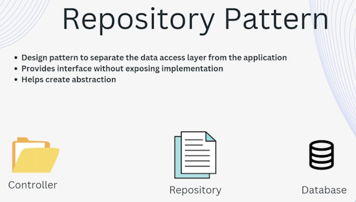

The Repository Pattern and Automapper
The Repository pattern

The Repository pattern is a design pattern that helps separate the data access layer from the rest of the application.
It provides a standard interface which is an interface class for accessing and managing data in a data store such as a database without exposing the underlying implementation detail to the rest of the application.
The Repository pattern typically involves creating an abstraction layer between the application and the data store which is implemented by a concrete Repository class.
The Repository class is responsible for creating CRUD operations on the data store and it exposes a set of methods that the application can use to interact with the data.

At the moment in our application we have the dbContext class injected inside the controller and it is the controller that is talking directly to the database using that context. That is not best practice and using the repository design pattern we can eliminate that and use an abstraction layer by adding that abstraction layer in between. Repositories can be added in between the controller and the database so that all the operations on the database is handled by the Repository.
The dbContext class is injected inside the Repository rather that inside the controller and it is the Repository that is then injected in the controller. So the controller will use the Repository instead of using the dbContext.
By doing that the controller now has no awareness of what is being called through the dbContext weather is is a SQL Server database, a MongoDb database or other database. It has no idea of where the data is coming from. It is just using the interface method exposed by the interface Repository and the implementation is hidden behind the implementation Repository.
Using that you can switch the logic and the data store behind the implementation Repository, for example you can use EntityFramework core to store your changes in a database or you can just use an in memory database by creating another implementation Repository.
All of those changes are happening behind the Repository and the controller has no knowledge about the data store at all.
By using the Repository pattern in ASP.Net Core developers can achieve several benefits. They are decoupling the data access layer from the rest of the application which makes it easier to maintain and test the application providing a standard interface for accessing data which improves the consistency and readability of the code. Now every connection to the database goes through the Repository.
We can also improve the performance of the application by using caching or other optimisation techniques supporting multiple data sources which allow the application to switch between different data sources without affecting the application logic.
Overall the Repository pattern is powerful tool for managing data in ASP.Net Core applications.
Implementing the Repository
We are using SQL Server so our Repository folder will be be named SqlRepository.
To implement the Repository we have to create an Interface Repository. In our case this will be the IArtistRepository and after we have exposed the interface which exposes the CRUD operations we would then need an implementation, a concrete Repository that would be used to implement all of these methods for us. This Repository will be named, ArtistRepository.
Doing this will make it easy to swap out our data store, for example, an in-memory database in future.
IArtistRepository
Create a new Interface class named IArtistRepository.
public interface IArtistRepository
{
Task<List<Artist>> GetAllAsync();
Task<Artist?> GetByIdAsync(int id);
Task<Artist> CreateAsync(Artist artist);
Task<Artist?> UpdateAsync(int id, Artist artist);
Task<Artist?> DeleteAsync(int id);
}
In the IArtistRepository we will end all method names with Async to make them different to the methods in the Artist controller.
Now create the ArtistRepository class and implement the Interface.
namespace RecordDb.API.SQLRepository
{
public class ArtistRepository : IArtistRepository
{
}
}
If you mouse over IArtistRepository it will show this.

It is asking you to implement the Interface methods.
You can do this by a mouseover the IArtistRepository word and click Ctrl-., you will see the option Implement Interface. Select this and it will scaffold all of the methods that you have in your IArtistInterface.
You will end up with this.
public class ArtistRepository : IArtistRepository
{
public Task<Artist> CreateAsync(Artist artist)
{
throw new NotImplementedException();
}
public Task<Artist?> DeleteAsync(int id)
{
throw new NotImplementedException();
}
public Task<List<Artist>> GetAllAsync()
{
throw new NotImplementedException();
}
public Task<Artist?> GetByIdAsync(int id)
{
throw new NotImplementedException();
}
public Task<Artist?> UpdateAsync(int id, Artist artist)
{
throw new NotImplementedException();
}
}
Note: it has made Async methods but left out the keyword async. You will have to manually add these to each method.
Now we will work on our ArtistRepository class.
The first thing to do is add the RecordDbContext to the ArtistRepository constructor.
private readonly RecordDbContext dbContext;
public ArtistRepository(RecordDbContext dbContext)
{
this.dbContext = dbContext;
}
The ArtistRepository GetAllAsync() method
public async Task<List<Artist>> GetAllAsync()
{
return await dbContext.Artist.ToListAsync();
}
We removed this dbContext statement from the Artist Controllers GetAll() method. We then changed the statement in the GetAll() method to this.
// GET data from the database - Domain Model
var artists = await artistRepository.GetAllAsync();
ArtistsController GetAll() method
// GET: https://localhost:1234/api/artists
[HttpGet]
public async Task<IActionResult> GetAll()
{
// GET data from the database - Domain Model
var artists = await artistRepository.GetAllAsync();
// MAP Domain Model to DTO
var artistsDto = new List<ArtistDto>();
foreach (var artist in artists)
{
artistsDto.Add(new ArtistDto()
{
ArtistId = artist.ArtistId,
FirstName = artist.FirstName,
LastName = artist.LastName,
Name = artist.Name,
Biography = artist.Biography
});
}
// Return the DTO back to the client
return Ok(artistsDto);
}
Basically, what we are doing in all of our CRUD methods is taking all dbContext calls from the ArtistsController class and placing them in the respective ArtistRepository class methods. We then rewrite the data calls in the ArtistsController class to connect to the ArtistRepository class and that class retrieves data from the data store and sends it back to the ArtistsController class.
Inject ArtistRepository into ArtistsController
Now we have the GetAll() method setup and ready to test. We have one more thing to do to get it working. we need to inject it into our application.
Open Program.cs and after we inject the RecordDbContext we can also inject the ArtistRepository.
builder.Services.AddScoped<IArtistRepository, ArtistRepository>();
Now we will inject the artistRepository into the ArtistsController
private readonly RecordDbContext dbContext;
private readonly IArtistRepository artistRepository;
public ArtistsController(RecordDbContext dbContext, IArtistRepository artistRepository)
{
this.dbContext = dbContext;
this.artistRepository = artistRepository;
}
Note: we know that we have to remove the dbContext from the ArtistsController class. Leave it in the ArtistsController while we are working on the ArtistRepository class. Once we finish working on our CRUD methods in the ArtistRepository we can remove it. This will stop us from seeing errors in the Controller methods we haven't finished.
Now we can inject the ArtistRepository into the GetById() method in ArtistsController.
ArtistsController GetById() method
// GET: https://localhost:1234/api/artists/114
[HttpGet]
[Route("{id:int}")]
public async Task<IActionResult> GetById([FromRoute] int id)
{
// GET Artist Domain mode from database
var artist = await artistRepository.GetByIdAsync(id);
if (artist == null)
{
return NotFound($"An Artist with Id: {id} wasn't found!");
}
// Map Artist Domain model to ArtistDto
var artistDto = new ArtistDto
{
ArtistId = artist.ArtistId,
FirstName = artist.FirstName,
LastName = artist.LastName,
Name = artist.Name,
Biography = artist.Biography
};
// Return the DTO back to the client
return Ok(artistDto);
}
ArtistRepository GetByIdAsync() method
public async Task<Artist?> GetByIdAsync(int id)
{
return await dbContext.Artist.FirstOrDefaultAsync(a => a.ArtistId == id);
}
ArtistsController Create() method
// POST: https://localhost:1234/api/artists
[HttpPost]
public async Task<IActionResult> Create([FromBody] AddArtistDto addArtistDto)
{
// Map DTO to Domain Model
var artist = new Artist
{
FirstName = addArtistDto.FirstName,
LastName = addArtistDto.LastName,
Name = addArtistDto.Name,
Biography = addArtistDto.Biography
};
// Use Domain Model to create Artist
artist = await artistRepository.CreateAsync(artist);
// Map Domain model back to DTO
var artistDto = new ArtistDto
{
ArtistId = artist.ArtistId,
FirstName = artist.FirstName,
LastName = artist.LastName,
Name = artist.Name,
Biography = artist.Biography
};
return CreatedAtAction(nameof(GetById), new { id = artistDto.ArtistId }, artistDto);
}
ArtistRepository CreateAsync() method
public async Task<Artist> CreateAsync(Artist artist)
{
await dbContext.Artist.AddAsync(artist);
await dbContext.SaveChangesAsync();
return artist;
}
ArtistsController Update() method
[HttpPut]
[Route("{id:int}")]
public async Task<IActionResult> Update([FromRoute] int id, [FromBody] UpdateArtistDto updateArtistDto)
{
// Map DTO to Domain Model
var artist = new Artist
{
FirstName = updateArtistDto.FirstName,
LastName = updateArtistDto.LastName,
Name = updateArtistDto.Name,
Biography = updateArtistDto.Biography
};
artist = await artistRepository.UpdateAsync(id, artist);
if (artist == null)
{
return NotFound($"Artist with Id: {id} wasn't found!");
}
// Convert Domain Model to DTO
var artistDto = new ArtistDto
{
ArtistId = artist.ArtistId,
FirstName = artist.FirstName,
LastName = artist.LastName,
Name = artist.Name,
Biography = artist.Biography
};
return Ok(artistDto);
}
ArtistRepository UpdateAsync() method
public async Task<Artist?> UpdateAsync(int id, Artist artist)
{
var existingArtist = await dbContext.Artist.FirstOrDefaultAsync(b => b.ArtistId == id)
if (existingArtist == null)
{
return null;
}
existingArtist.FirstName = artist.FirstName;
existingArtist.LastName = artist.LastName;
existingArtist.Name = artist.Name;
existingArtist.Biography = artist.Biography
await dbContext.SaveChangesAsync()
return existingArtist;
}
ArtistsController Delete() method
// DELETE: https://localhost:1234/api/artists/114
[HttpDelete]
[Route("{id:int}")]
public async Task<IActionResult> Delete([FromRoute] int id)
{
var artist = await artistRepository.DeleteAsync(id);
if (artist == null)
{
return NotFound($"Artist with Id: {id} not found!");
}
// Map the Domain Model to DTO
var artistDto = new ArtistDto
{
ArtistId = artist.ArtistId,
FirstName = artist.FirstName,
LastName = artist.LastName,
Name = artist.Name,
Biography = artist.Biography
};
return Ok(artistDto);
}
ArtistRepository DeleteAsync() method
public async Task<Artist?> DeleteAsync(int id)
{
var artist = await dbContext.Artist.FindAsync(id);
if (artist == null)
{
return null;
}
dbContext.Artist.Remove(artist);
await dbContext.SaveChangesAsync();
return artist;
}
Finish the ArtistController constructor
Remove the dbContext property from the ArtistsController class.
private readonly IArtistRepository artistRepository;
public ArtistsController(IArtistRepository artistRepository)
{
this.artistRepository = artistRepository;
}
This completes the decoupling of the data store from the ArtistsController class.